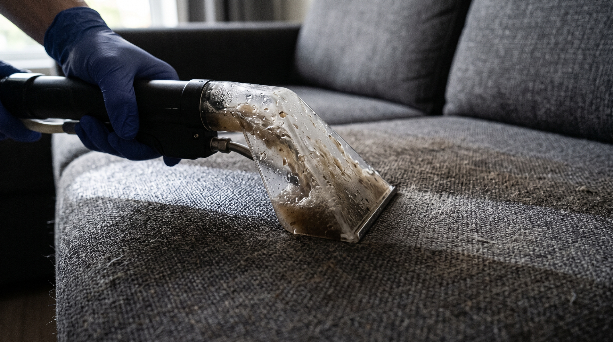

Экстрактор подаёт раствор под давлением в толщу обивки и тут же откачивает его обратно вместе с грязью. Поэтому пятно не размазывается по поверхности, а уходит вместе с водой, и ткань не остаётся мокрой насквозь.
Пробуем состав с изнанки или под подушкой, смотрим, как ткань реагирует, до того как средство попадёт на видное место.
Снимаем пыль, шерсть и крошки насадкой-щёткой. Если этого не сделать, вода превратит пыль в грязевые разводы.
Раствор под давлением уходит в волокно и сразу откачивается. По прозрачной головке насадки видно, что именно вышло из ткани.
Проходим сухим циклом, вытягивая остатки влаги. Дальше диван сохнет сам при открытом окне.

Прозрачная головка — это не украшение. Через неё видно, что вышло из вашей ткани: серая вода вместо обещаний.